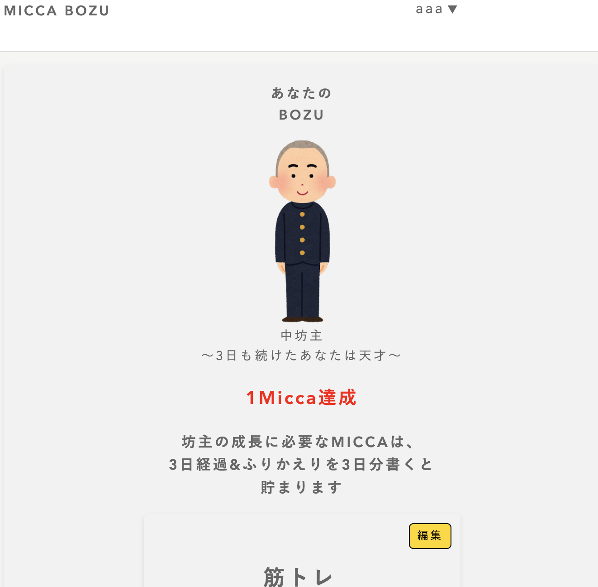

MICCA BOZU（超短期目標共有SNS）
開発環境
Ruby / Ruby on Rails / MySQL / GitHub / Render / Visual Studio Code
-
概要
制作時間 60時間 URL https://oriapp.onrender.com ID admin PASS 2222 -
動作テスト
テスト用アカウント
mail aaa@aaa PASS 111aaa
OUTLINEアプリケーションの概要
オリジナルアプリケーションとして、「3日間頑張ること」を共有をするSNSを開発しました。
主な機能は、ユーザー登録機能、目標設定機能、マイページ機能、ふりかえり機能、応援（いいね）機能です。
トップページにアクセスすると、まずアプリの使い方と魅力を確認することができます。
ユーザー登録をすると、目標を宣言することができます。ガイドラインによりハードルの低い目標設定ができるようになっています。またふりかえりを記入するとポイントが貯まり、キャラクターが成長していくマイページもあります。
また、他の人の目標を閲覧することもでき、共感するものがあれば「応援ボタン」にて応援することができます。
-
開発に至った経緯
友人にどんなアプリケーションがあればいいかヒアリングするところからこのアプリケーションの開発ははじまりました。
友人は「いろいろなチャレンジを時間をとって継続したいが、なかなか続けることができない。やりたいことはいっぱいあるのに」ということを伝えてくれました。世の中には習慣化のアプリケーションやサービスが溢れています。なのにどうしてこのような悩みを持つことがあるのだろうと考えた結果、「継続するまでにのめり込むことが見つかっていないのではないか」ということを考えました。
そこで、一般的には悪いこととされている「3日坊主」という行動を「自分のやりたいことを見つけるためにたくさんの経験を積む時間」というポジティブな言葉に変えるべく、アプリの実装を進めていきました。
-
開発で工夫したこと
1つ目がマイページ機能です。たくさんのチャレンジを促すために自分のやったことを記録することでキャラクターが成長する機能を実装しました。これにより楽しみながらアプリケーションを使ってくれると期待しております。
2つ目がふりかえり機能です。本アプリケーションの目的を達成するためにはやったことをふりかえる時間が大切だと思っています。キャラクターが進化するためにふりかえりの機能を必須にすることで、ユーザーにふりかえる体験を提供できるようにしました。
いずれも、友人に実際に利用してもらい、ユーザーヒアリングを行いながら改善を行っています。